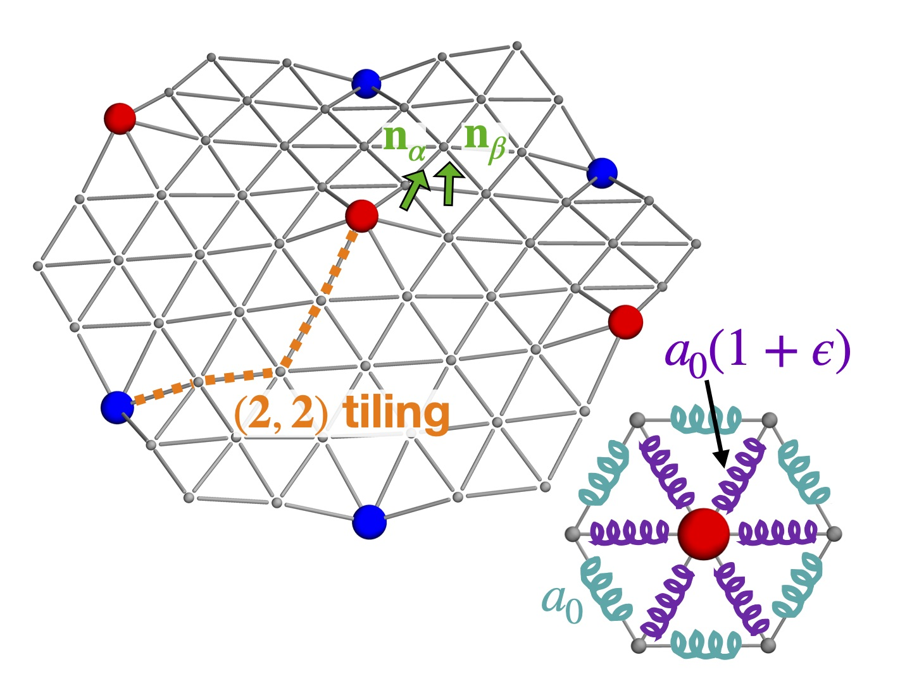
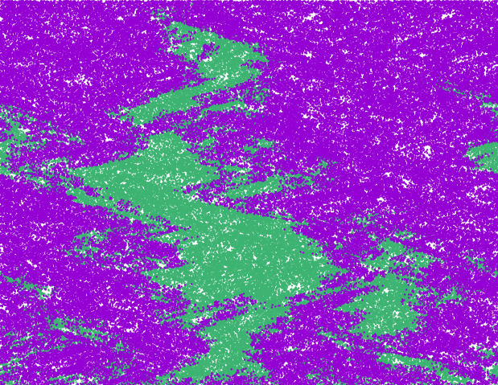
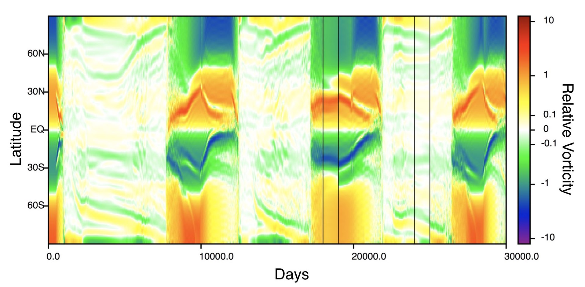

Photo credit: Bonnie Lin
Abigail Plummer
I am a physics PhD student at Harvard University. This site describes some of my research in soft matter, population genetics, and fluid turbulence.
plummer [at] g.harvard.edu 
Research projects
Buckling of an array of impurities

Joint work with David Nelson.
We studied periodic arrays of impurities that create localized regions of expansion, embedded in 2D crystalline membranes. Past a buckling transition, these dilations behave like spins in an Ising model, creating a mechanical analog of geometric frustration.
See our paper for details on our work at zero temperature (doi, arXiv). We are now looking into the finite temperature behavior of this model with Paul Hanakata.
Competing species in a turbulent fluid

Joint work with Roberto Benzi, David Nelson, and Federico Toschi.
In marine environments, phytoplankton species compete with one another while being advected by effectively compressible turbulent flows. Working in one dimension, we found that even very weak flows that are unable to alter the spatial distribution of organisms can have an important effect on the outcomes of genetic competitions.
See our paper for details (doi, arXiv). A recording of a talk I gave on this project at the 2019 Boston University Theory of Living Systems Meeting can be found here. We recently extended some of these results to two dimensions with Giorgia Guccione (doi, arXiv), and are currently working to make a connection between our theory and real ocean data with Mara Freilich and Amala Mahadevan.
Instability in a differentially rotating plasma

Joint work with Brad Marston and Steve Tobias.
A tachocline is a thin shear layer thought to play an important role in the magnetic activity of Sun-like stars. We studied an idealized two-dimensional model of the solar tachocline, focusing on a joint instability in which the model’s differential rotation is stable in the absence of a magnetic field but unstable in its presence.
See our paper for details (doi, arXiv).